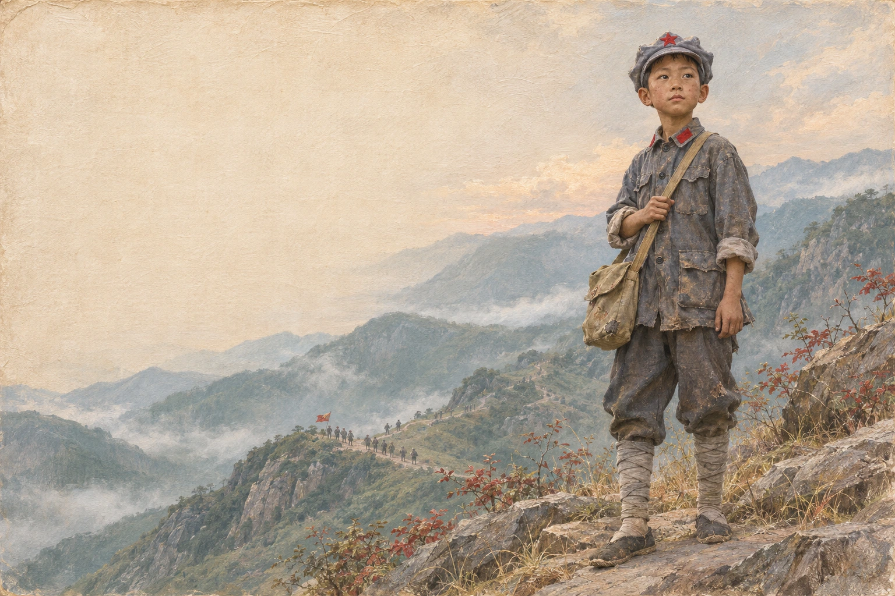

向轩 · 少年情景形象9岁走长征
AI情景再现，面容为艺术想象，非本人历史照片
人物档案 / 湖南桑植
他叫向轩，
那年只有九岁。
在行军队伍里，也有孩子。他们承担勤务、通信等工作，战友们亲切地称他们为“红小鬼”。
1926出生于湖南桑植
向轩出生于湖南桑植。母亲贺满姑、大姨贺英都是游击队指挥员，贺龙是他的大舅。
两岁时失去第一位“妈妈”
母亲贺满姑牺牲后，向轩和兄姐被关入牢中。大姨贺英设法救出三个孩子。从此，向轩跟随她生活，也叫她“妈妈”。
1933再次经历离别
游击队遭到偷袭，贺英牺牲。向轩逃向山林时右脚踝负伤，幸得游击队员接应。他的军龄后来被确定从1933年4月12日算起。
1935九岁，随队伍出发
1935年11月，向轩随红二、六军团从湖南桑植出发，成为司令部通信班里年纪最小的战士。
从家乡踏上长征
向轩随红二、六军团从湖南桑植出发，跟随队伍一路向前。
走到陕北，少年后来留在延安学习，生活翻开了新的一页。